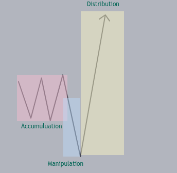
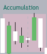
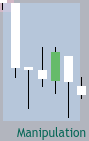
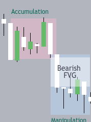
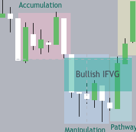
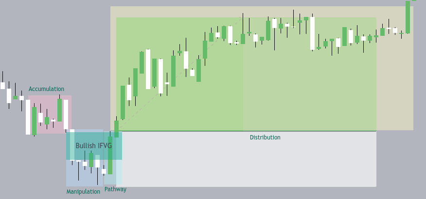

Overview

The MOM (Move the Markets) trading strategy is based on the AMD (Accumulation, Manipulation, Distribution) model. It ususes FVGS and IFVGS to catch big moves.
If you are not familiar with the AMD cycle do learn that first.As all strategies this isnt 100% but rather closer to 82%.Do your own research before trading this.
I foun this from ghosttraders an PB Tradings Reels.This example will be for longs but u can do the opposite for shorts
Steps

Identify Accumulation Zone
Look for a consolidation area on the price chart where the market is just moving sideways in a range.
Hint: An ideal accumulation zone typically has 4-7 candles.

Spot the Manipulation Leg
When you see a sudden, sharp move breaking out from the accumulation zone, mark it as the manipulation leg.
Hint: An ideal manipulation zone usually has 3-4 candles.
Identify the Pathway
Observe the move recovering from the manipulation leg. This is only until it catches upto the accumulation zone.
Hint: The ideal pathway usually consists of 2-3 sudden candles moving back from the manipulation to a nearby FVG.

Mark Fair Value Gaps (FVGs)
Mark any FVGs that appear. Focus on the highest timeframe FVG for this strategy.
Hint: Mark the highest timeframe FVG carefully.

Trade the Inverse FVG
Once the highest timeframe FVG gets inversed, enter a long
Hint: Set your stop loss at the low of the manipulation leg for long entries.
Entry

Take a Long as a canle inverses above the bearish FVG converts it into a Bullish IFVG.Set your stop loss at the low of the manipulation.Only take the trade if the high of the accumulation zone gets you a 0.7-1:1 RR.Set you take profit targetting recent highs or sellside liqudity.Set your stop loss to breakven as you break the accumulation high and take partial along the way
Ideal Entry
In an ideal entry:
The accumulation zone would be 4-7 candles,The manipulation move would be 3-4 candles,the path way would be 2-4 candles,the highest timeframe ifvg would be near the manipulation low,you get a 0.8-1 RR at accumulation zone high,the stop loss would be manipulation leg low.Target woul be some sellside liqudity
or highs.